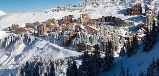
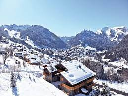

Les endroits les plus fous !

Les Gets
Morzine

Avoriaz

Chatel
Notre fondateur !

Notre fondateur à tout appris de la montagne lorsqu'il passait toutes ses vacances au Gets durant son enfance. Voulant partager sa passion, il décida de crée son entreprise afin de montrer toute la beauté de ces endroits.